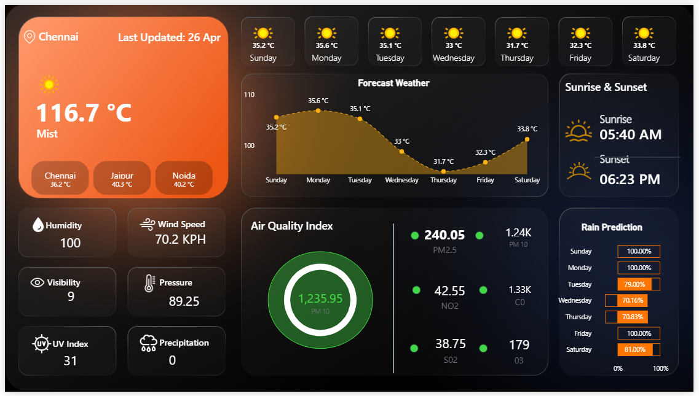

Power BI Developer & Data Analyst
I build BI dashboards, data pipelines, and reporting systems that cut through noise — from sales intelligence to supply chain analytics.
About
I'm a BI Analyst at Mars Cosmetics, where I own end-to-end reporting — from raw source data to executive dashboards used across 10+ sales channels and 3 business units.
My work focuses on building scalable, automated pipelines that eliminate manual work and surface insights that drive quarterly decisions. I care deeply about data accuracy, model design, and making dashboards people actually use.
When I'm not in Power BI, I write SQL, clean data in Python, and document my projects on GitHub.
Experience
Projects
Contact
Open to freelance BI projects, full-time roles, or just a conversation about data. Drop me a message on any of these platforms.
Email me →